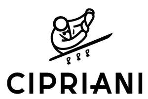

Trade Mark Journal No.2025/009 28 February 2025
UK00004162519 19 February 2025 (8,20,21,24,25,36)

- Class 8
- Forks; knives; spoons; table cutlery; pizza cutters.
- Class 20
- Furniture; mirrors; picture frames; bedding, except linen; pillows; wardrobes; bedsteads of wood; book stand; bamboo furniture; benches [furniture]; trays, not of metal; chests; bookcases; screen (furniture); bottle racks; medicine cabinets; beds; cane furniture; settees; divan beds; hampers [baskets] for the transport of items; non-metallic caps and closures for bottles and for containers; closers (Non-electric, non-metallic -) for windows; closers (Non-electric, non-metallic -) for doors; cushions; mattresses; nap mats [cushions or mattresses]; chests of drawers; shells; containers, not of metal [storage, transport]; fittings for curtains; bag hangers, not of metal; animal horns; bassinets; shelving units; index cabinets [furniture]; garment covers [storage]; flower-stands [furniture]; frames; ivory, unworked or semi-worked; tables; wicker; coat hangers; coat stands; magazine racks; seats; armchairs; sofas; bed bases; table tops; stools; corks; plastic key cards, not encoded and not magnetic; towel stands [furniture]; dressing tables; silvered glass [mirrors]; furniture made principally of glass; vitrines.
- Class 21
- Drinking glasses; porcelain ware; articles of glass, namely sugar bowls, bottles, epergnes, cocktail shakers, demijohns, salad bowls, jugs, vases, containers for household or kitchen use, salt cellars, pot lids, teapots, vinegar cruets, shakers for spices, dishware; cooking pots; kitchen utensils.
- Class 24
- Textile tablecloths, bed covers, towels of textile.
- Class 25
- Dressing gowns.
- Class 36
- Real estate services; leasing and rental of apartments, homes and condominiums; real estate services for apartments, homes and condominiums; real estate listing services; leasing of real estate; financing and managing commercial, residential and hotel properties; real estate acquisition, management, brokerage, appraisal and consulting services; estate agency services; information and advice in respect of all of the aforesaid services.
ALTUNIS - TRADING, GESTÃO E SERVIÇOS, SOCIEDADE UNIPESSOAL, LDA.
Representative: K&L Gates LLP